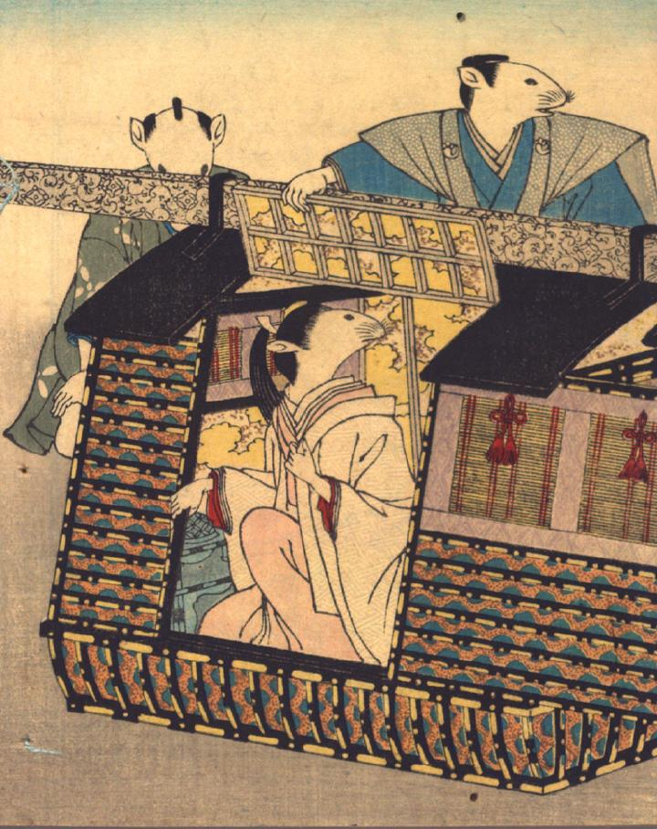

花嫁姿の鼠が、駕籠から降りようとしている。駕籠の後ろには、お供の鼠が2体おり、1体は駕籠の屋根の一部を抑えている。
著作者：David Thompson／出典：親書誌：U426_nichibunken_0112：Nedzumi no Yome-Iri／日付：2006／資源識別子：U426_nichibunken_0112_0001_0000
Copyright (c)2010- International Research Center for Japanese Studies, Kyoto, Japan. All rights reserved.